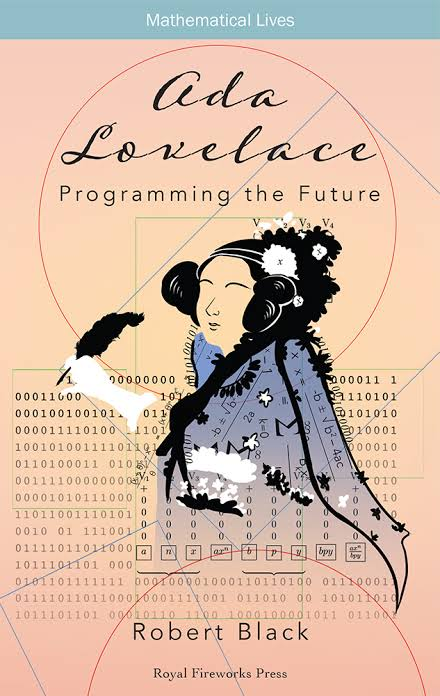

Ada Lovelace
The First Computer Programmer
The First Computer Programmer
Ada Lovelace was a brilliant mathematician who lived in the 1800s. She is famous for working with a man named Charles Babbage. Babbage invented a machine called the "Analytical Engine." Ada realized that this machine could do much more than just math. She wrote a special set of instructions for the machine, which became known as the first computer program.
She was the daughter of the famous poet Lord Byron, but her mother wanted her to focus on math and logic instead of poetry. This led her to meet many smart scientists of her time. She is a huge inspiration for women in science today.
| Year | What Happened |
|---|---|
| 1815 | Ada was born in London, England. |
| 1833 | She met Charles Babbage for the first time. |
| 1843 | She published her famous notes and the first algorithm. |
